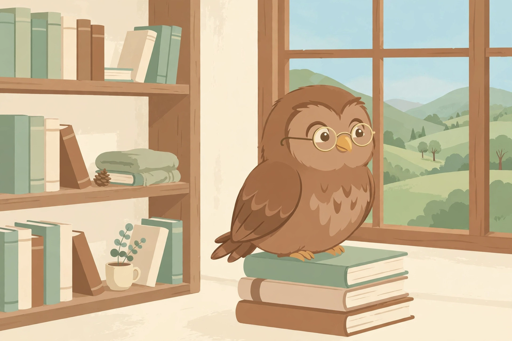

A quiet valley reading room where every book is one of the mirror's own.
A mirror of the online bookstore kind of website: a catalog of Signature-made books, found by subject.
Signature Library is a mirror of the online bookstore kind of website. The kind grew out of the printed bookshop and the public library: first came shelves a visitor could walk, then printed lists of books by subject, then network catalogs where a search word returns every matching book with its page count. This mirror follows that same shape — a catalog, a search by subject, and a book page — rebuilt with Signature branding and the network's own data.
Works out how many days a book takes at so many pages a day. It cannot read the book for you — it only works out the days.
Finds books from the mirror's own catalog by subject word, and adds up their pages. It cannot open a book — it only finds matches.
Designs, printables, and demos only — free to download and make. Nothing here is for sale.
A set of six bookmarks, one for each subject shelf: stories, travel, science, craft, poems, and maps.
Signature design A design, not a good for sale. Free to download and make.
A plain reading journal: one page per book, with lines for the title, the subjects, the page count, and what you thought of it.
Signature design A design, not a good for sale. Free to download and make.
A sheet of bookplates to paste inside the front cover of a book, marking it as part of your own shelf.
Signature design A design, not a good for sale. Free to download and make.
Fun, labeled fun — not a fact. The Quiet Valley Reading Circle is a made-up circle of readers for the mirror's own books: Wren the owl reads aloud on Thursday evenings, the lantern stays lit until the last page, and the circle is still arguing about whether The Mapmaker's Apprentice ever found the far coast. None of this happened; it is a story for readers.
Tools (JavaScript)Design sheet 1Design sheet 2Design sheet 3
Wren the owl is the mascot of this themed version. Questions about the subject go to Group 3.